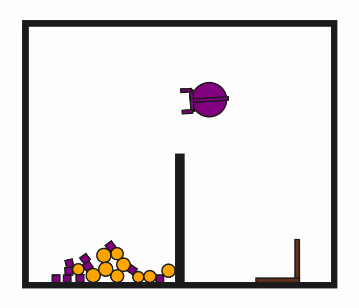

prbench/DynScoopPour2D-o20-v0

Description
A 2D physics-based tool-use environment where a robot must use an L-shaped hook to scoop small objects from the left side of a middle wall and pour them onto the right side. The middle wall is half the height of the world, allowing objects to be scooped over it.
Environment Setup: - Middle Wall: A wall at the center of the world that extends from the floor to half the world height - Small Objects: 10 circles and 10 squares initially on the left side - L-shaped Hook: A tool that can be grasped and manipulated by the robot - Four Boundary Walls: Enclose the entire workspace
The robot has a movable circular base and an extendable arm with gripper fingers. The hook is a kinematic object that can be grasped and used as a tool to scoop the small objects. Small objects are dynamic and follow realistic PyMunk physics, but they cannot be grasped directly by the robot.
Observation Space: The observation is a fixed-size vector containing the state of all objects: - Robot: position (x,y), orientation (θ), velocities (vx,vy,ω), arm extension, gripper gap - Hook: position, orientation, dimensions (L-shaped tool, can be grasped) - Small Circles (10): position, radius, velocities (dynamic, non-graspable) - Small Squares (10): position, size, orientation, velocities (dynamic, non-graspable)
All objects include physics properties like mass, moment of inertia, and color information for rendering.
Initial State Distribution
Example Demonstration
(No demonstration GIFs available)
Observation Space
The entries of an array in this Box space correspond to the following object features:
| Index | Object | Feature |
|---|---|---|
| 0 | robot | x |
| 1 | robot | y |
| 2 | robot | theta |
| 3 | robot | vx_base |
| 4 | robot | vy_base |
| 5 | robot | omega_base |
| 6 | robot | vx_arm |
| 7 | robot | vy_arm |
| 8 | robot | omega_arm |
| 9 | robot | vx_gripper_l |
| 10 | robot | vy_gripper_l |
| 11 | robot | omega_gripper_l |
| 12 | robot | vx_gripper_r |
| 13 | robot | vy_gripper_r |
| 14 | robot | omega_gripper_r |
| 15 | robot | static |
| 16 | robot | base_radius |
| 17 | robot | arm_joint |
| 18 | robot | arm_length |
| 19 | robot | gripper_base_width |
| 20 | robot | gripper_base_height |
| 21 | robot | finger_gap |
| 22 | robot | finger_height |
| 23 | robot | finger_width |
| 24 | hook | x |
| 25 | hook | y |
| 26 | hook | theta |
| 27 | hook | vx |
| 28 | hook | vy |
| 29 | hook | omega |
| 30 | hook | static |
| 31 | hook | held |
| 32 | hook | color_r |
| 33 | hook | color_g |
| 34 | hook | color_b |
| 35 | hook | z_order |
| 36 | hook | width |
| 37 | hook | length_side1 |
| 38 | hook | length_side2 |
| 39 | hook | mass |
| 40 | small_circle0 | x |
| 41 | small_circle0 | y |
| 42 | small_circle0 | theta |
| 43 | small_circle0 | vx |
| 44 | small_circle0 | vy |
| 45 | small_circle0 | omega |
| 46 | small_circle0 | static |
| 47 | small_circle0 | held |
| 48 | small_circle0 | color_r |
| 49 | small_circle0 | color_g |
| 50 | small_circle0 | color_b |
| 51 | small_circle0 | z_order |
| 52 | small_circle0 | radius |
| 53 | small_circle0 | mass |
| 54 | small_circle1 | x |
| 55 | small_circle1 | y |
| 56 | small_circle1 | theta |
| 57 | small_circle1 | vx |
| 58 | small_circle1 | vy |
| 59 | small_circle1 | omega |
| 60 | small_circle1 | static |
| 61 | small_circle1 | held |
| 62 | small_circle1 | color_r |
| 63 | small_circle1 | color_g |
| 64 | small_circle1 | color_b |
| 65 | small_circle1 | z_order |
| 66 | small_circle1 | radius |
| 67 | small_circle1 | mass |
| 68 | small_circle2 | x |
| 69 | small_circle2 | y |
| 70 | small_circle2 | theta |
| 71 | small_circle2 | vx |
| 72 | small_circle2 | vy |
| 73 | small_circle2 | omega |
| 74 | small_circle2 | static |
| 75 | small_circle2 | held |
| 76 | small_circle2 | color_r |
| 77 | small_circle2 | color_g |
| 78 | small_circle2 | color_b |
| 79 | small_circle2 | z_order |
| 80 | small_circle2 | radius |
| 81 | small_circle2 | mass |
| 82 | small_circle3 | x |
| 83 | small_circle3 | y |
| 84 | small_circle3 | theta |
| 85 | small_circle3 | vx |
| 86 | small_circle3 | vy |
| 87 | small_circle3 | omega |
| 88 | small_circle3 | static |
| 89 | small_circle3 | held |
| 90 | small_circle3 | color_r |
| 91 | small_circle3 | color_g |
| 92 | small_circle3 | color_b |
| 93 | small_circle3 | z_order |
| 94 | small_circle3 | radius |
| 95 | small_circle3 | mass |
| 96 | small_circle4 | x |
| 97 | small_circle4 | y |
| 98 | small_circle4 | theta |
| 99 | small_circle4 | vx |
| 100 | small_circle4 | vy |
| 101 | small_circle4 | omega |
| 102 | small_circle4 | static |
| 103 | small_circle4 | held |
| 104 | small_circle4 | color_r |
| 105 | small_circle4 | color_g |
| 106 | small_circle4 | color_b |
| 107 | small_circle4 | z_order |
| 108 | small_circle4 | radius |
| 109 | small_circle4 | mass |
| 110 | small_circle5 | x |
| 111 | small_circle5 | y |
| 112 | small_circle5 | theta |
| 113 | small_circle5 | vx |
| 114 | small_circle5 | vy |
| 115 | small_circle5 | omega |
| 116 | small_circle5 | static |
| 117 | small_circle5 | held |
| 118 | small_circle5 | color_r |
| 119 | small_circle5 | color_g |
| 120 | small_circle5 | color_b |
| 121 | small_circle5 | z_order |
| 122 | small_circle5 | radius |
| 123 | small_circle5 | mass |
| 124 | small_circle6 | x |
| 125 | small_circle6 | y |
| 126 | small_circle6 | theta |
| 127 | small_circle6 | vx |
| 128 | small_circle6 | vy |
| 129 | small_circle6 | omega |
| 130 | small_circle6 | static |
| 131 | small_circle6 | held |
| 132 | small_circle6 | color_r |
| 133 | small_circle6 | color_g |
| 134 | small_circle6 | color_b |
| 135 | small_circle6 | z_order |
| 136 | small_circle6 | radius |
| 137 | small_circle6 | mass |
| 138 | small_circle7 | x |
| 139 | small_circle7 | y |
| 140 | small_circle7 | theta |
| 141 | small_circle7 | vx |
| 142 | small_circle7 | vy |
| 143 | small_circle7 | omega |
| 144 | small_circle7 | static |
| 145 | small_circle7 | held |
| 146 | small_circle7 | color_r |
| 147 | small_circle7 | color_g |
| 148 | small_circle7 | color_b |
| 149 | small_circle7 | z_order |
| 150 | small_circle7 | radius |
| 151 | small_circle7 | mass |
| 152 | small_circle8 | x |
| 153 | small_circle8 | y |
| 154 | small_circle8 | theta |
| 155 | small_circle8 | vx |
| 156 | small_circle8 | vy |
| 157 | small_circle8 | omega |
| 158 | small_circle8 | static |
| 159 | small_circle8 | held |
| 160 | small_circle8 | color_r |
| 161 | small_circle8 | color_g |
| 162 | small_circle8 | color_b |
| 163 | small_circle8 | z_order |
| 164 | small_circle8 | radius |
| 165 | small_circle8 | mass |
| 166 | small_circle9 | x |
| 167 | small_circle9 | y |
| 168 | small_circle9 | theta |
| 169 | small_circle9 | vx |
| 170 | small_circle9 | vy |
| 171 | small_circle9 | omega |
| 172 | small_circle9 | static |
| 173 | small_circle9 | held |
| 174 | small_circle9 | color_r |
| 175 | small_circle9 | color_g |
| 176 | small_circle9 | color_b |
| 177 | small_circle9 | z_order |
| 178 | small_circle9 | radius |
| 179 | small_circle9 | mass |
| 180 | small_square0 | x |
| 181 | small_square0 | y |
| 182 | small_square0 | theta |
| 183 | small_square0 | vx |
| 184 | small_square0 | vy |
| 185 | small_square0 | omega |
| 186 | small_square0 | static |
| 187 | small_square0 | held |
| 188 | small_square0 | color_r |
| 189 | small_square0 | color_g |
| 190 | small_square0 | color_b |
| 191 | small_square0 | z_order |
| 192 | small_square0 | size |
| 193 | small_square0 | mass |
| 194 | small_square1 | x |
| 195 | small_square1 | y |
| 196 | small_square1 | theta |
| 197 | small_square1 | vx |
| 198 | small_square1 | vy |
| 199 | small_square1 | omega |
| 200 | small_square1 | static |
| 201 | small_square1 | held |
| 202 | small_square1 | color_r |
| 203 | small_square1 | color_g |
| 204 | small_square1 | color_b |
| 205 | small_square1 | z_order |
| 206 | small_square1 | size |
| 207 | small_square1 | mass |
| 208 | small_square2 | x |
| 209 | small_square2 | y |
| 210 | small_square2 | theta |
| 211 | small_square2 | vx |
| 212 | small_square2 | vy |
| 213 | small_square2 | omega |
| 214 | small_square2 | static |
| 215 | small_square2 | held |
| 216 | small_square2 | color_r |
| 217 | small_square2 | color_g |
| 218 | small_square2 | color_b |
| 219 | small_square2 | z_order |
| 220 | small_square2 | size |
| 221 | small_square2 | mass |
| 222 | small_square3 | x |
| 223 | small_square3 | y |
| 224 | small_square3 | theta |
| 225 | small_square3 | vx |
| 226 | small_square3 | vy |
| 227 | small_square3 | omega |
| 228 | small_square3 | static |
| 229 | small_square3 | held |
| 230 | small_square3 | color_r |
| 231 | small_square3 | color_g |
| 232 | small_square3 | color_b |
| 233 | small_square3 | z_order |
| 234 | small_square3 | size |
| 235 | small_square3 | mass |
| 236 | small_square4 | x |
| 237 | small_square4 | y |
| 238 | small_square4 | theta |
| 239 | small_square4 | vx |
| 240 | small_square4 | vy |
| 241 | small_square4 | omega |
| 242 | small_square4 | static |
| 243 | small_square4 | held |
| 244 | small_square4 | color_r |
| 245 | small_square4 | color_g |
| 246 | small_square4 | color_b |
| 247 | small_square4 | z_order |
| 248 | small_square4 | size |
| 249 | small_square4 | mass |
| 250 | small_square5 | x |
| 251 | small_square5 | y |
| 252 | small_square5 | theta |
| 253 | small_square5 | vx |
| 254 | small_square5 | vy |
| 255 | small_square5 | omega |
| 256 | small_square5 | static |
| 257 | small_square5 | held |
| 258 | small_square5 | color_r |
| 259 | small_square5 | color_g |
| 260 | small_square5 | color_b |
| 261 | small_square5 | z_order |
| 262 | small_square5 | size |
| 263 | small_square5 | mass |
| 264 | small_square6 | x |
| 265 | small_square6 | y |
| 266 | small_square6 | theta |
| 267 | small_square6 | vx |
| 268 | small_square6 | vy |
| 269 | small_square6 | omega |
| 270 | small_square6 | static |
| 271 | small_square6 | held |
| 272 | small_square6 | color_r |
| 273 | small_square6 | color_g |
| 274 | small_square6 | color_b |
| 275 | small_square6 | z_order |
| 276 | small_square6 | size |
| 277 | small_square6 | mass |
| 278 | small_square7 | x |
| 279 | small_square7 | y |
| 280 | small_square7 | theta |
| 281 | small_square7 | vx |
| 282 | small_square7 | vy |
| 283 | small_square7 | omega |
| 284 | small_square7 | static |
| 285 | small_square7 | held |
| 286 | small_square7 | color_r |
| 287 | small_square7 | color_g |
| 288 | small_square7 | color_b |
| 289 | small_square7 | z_order |
| 290 | small_square7 | size |
| 291 | small_square7 | mass |
| 292 | small_square8 | x |
| 293 | small_square8 | y |
| 294 | small_square8 | theta |
| 295 | small_square8 | vx |
| 296 | small_square8 | vy |
| 297 | small_square8 | omega |
| 298 | small_square8 | static |
| 299 | small_square8 | held |
| 300 | small_square8 | color_r |
| 301 | small_square8 | color_g |
| 302 | small_square8 | color_b |
| 303 | small_square8 | z_order |
| 304 | small_square8 | size |
| 305 | small_square8 | mass |
| 306 | small_square9 | x |
| 307 | small_square9 | y |
| 308 | small_square9 | theta |
| 309 | small_square9 | vx |
| 310 | small_square9 | vy |
| 311 | small_square9 | omega |
| 312 | small_square9 | static |
| 313 | small_square9 | held |
| 314 | small_square9 | color_r |
| 315 | small_square9 | color_g |
| 316 | small_square9 | color_b |
| 317 | small_square9 | z_order |
| 318 | small_square9 | size |
| 319 | small_square9 | mass |
Action Space
The entries of an array in this Box space correspond to the following action features:
| Index | Feature | Description | Min | Max |
|---|---|---|---|---|
| 0 | dx | Change in robot x position (positive is right) | -0.030 | 0.030 |
| 1 | dy | Change in robot y position (positive is up) | -0.030 | 0.030 |
| 2 | dtheta | Change in robot angle in radians (positive is ccw) | -0.098 | 0.098 |
| 3 | darm | Change in robot arm length (positive is out) | -0.080 | 0.080 |
| 4 | dgripper | Change in gripper gap (positive is open) | -0.015 | 0.015 |
Rewards
A penalty of -1.0 is given at every time step until termination, which occurs when at least 70% of the small objects have been moved to the right side of the middle wall.
Termination Condition: The episode terminates when the fraction of small objects with x-position greater than the middle wall's x-position exceeds the success threshold (0.7).
Goal Achievement Strategy: The robot must: 1. Grasp the L-shaped hook tool with its gripper 2. Position the hook to scoop small objects on the left side 3. Lift and move the hook (with objects) over the half-height middle wall 4. Pour the objects onto the right side 5. Repeat until enough objects are transferred
Physics Integration: Since this environment uses PyMunk physics simulation, objects have realistic dynamics including: - Friction between surfaces - Collision response and momentum transfer - Realistic grasping and tool manipulation dynamics - Indirect manipulation through tool-object interactions - NOTE: No gravity is applied, but damping simulates frictional losses - Small objects use NON_GRASPABLE_COLLISION_TYPE to prevent direct grasping
References
This environment implements a complex tool-use manipulation task with physics-based dynamics. It extends the concept of tool use to include scooping and pouring behaviors, requiring spatial reasoning about container-like tools.
Key Features: - Tool-Use Paradigm: Robot must grasp and manipulate an L-shaped hook to indirectly move small objects - Spatial Reasoning: Objects must be scooped over a half-height wall dividing the workspace - Non-Graspable Objects: Small objects cannot be directly grasped, requiring tool-mediated manipulation - Multi-Object Manipulation: Handle many small objects simultaneously through containment - PyMunk Physics Engine: Provides realistic 2D rigid body dynamics for tool-object interactions - Collision Type System: Uses NON_GRASPABLE_COLLISION_TYPE to prevent direct grasping of small objects
Research Applications: - Tool-use learning and reasoning - Container-based manipulation strategies - Multi-step planning with tool grasping and scooping - Physics-aware motion planning for pouring behaviors - Evaluation of indirect manipulation vs. direct grasping - Long-horizon task planning (repeated scoop-pour cycles)
This environment enables evaluation of manipulation policies that require understanding of containment, tool use, and multi-object manipulation under realistic physics constraints. It tests the ability to reason about which objects can be manipulated directly vs. indirectly.